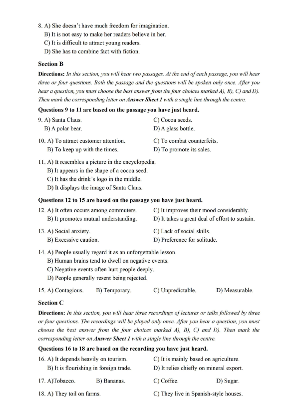
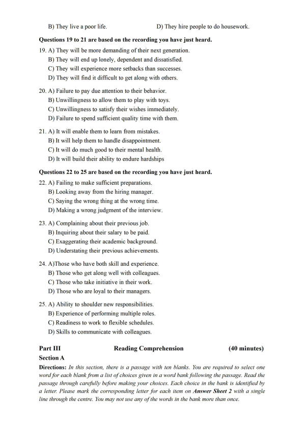
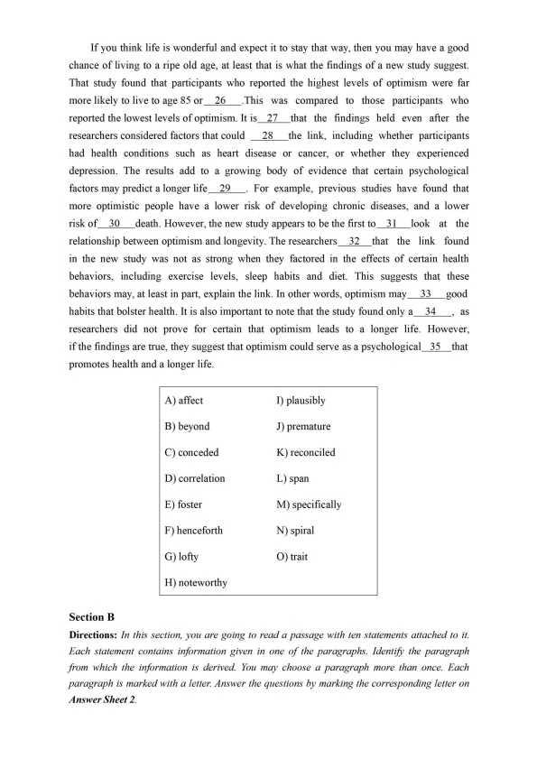
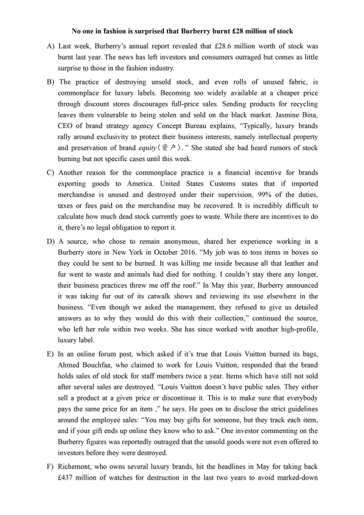
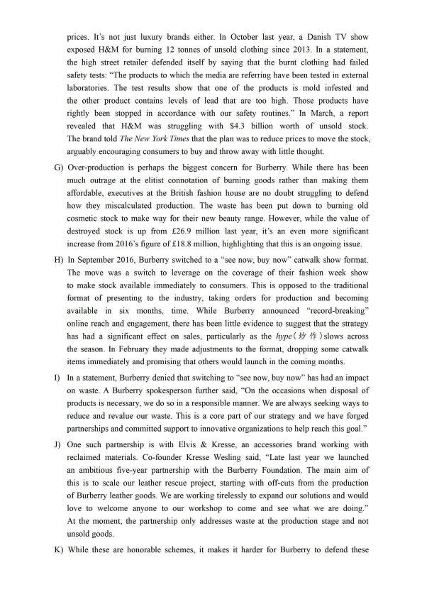
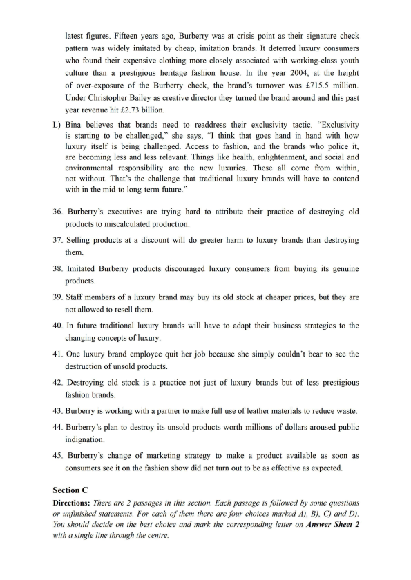
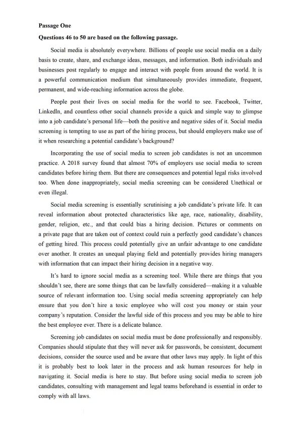
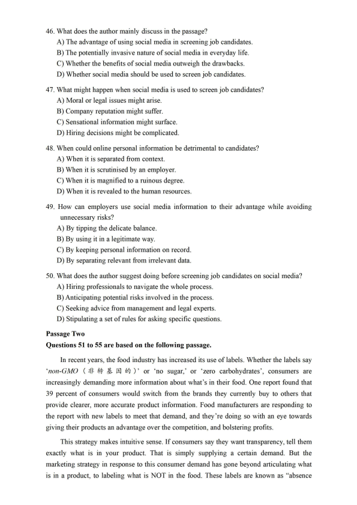
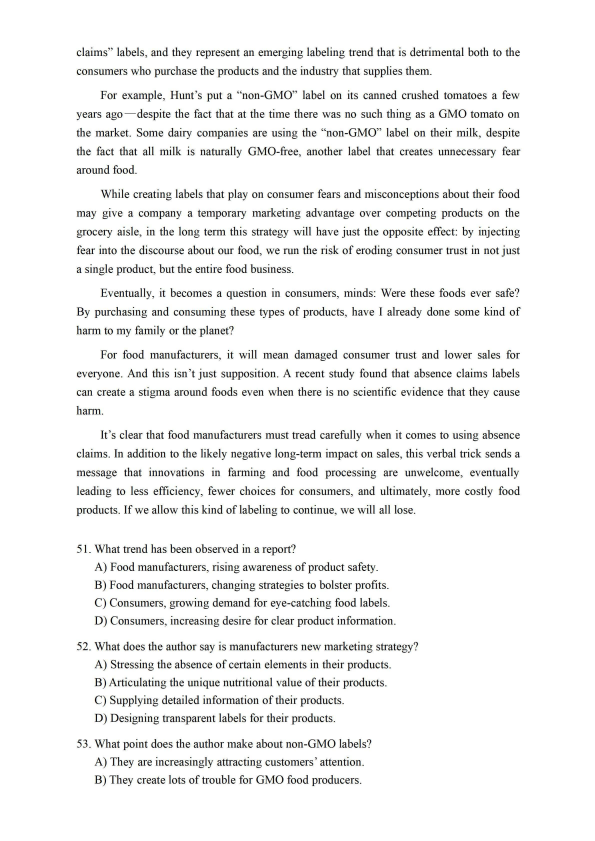

第 1 / 11 页

Part I
Writing
(30 minutes)
Directions: For this part, you are allowed 30 minutes to write an essay related to the short
passage given below. In your essay, you are to comment on the phenomenon described in the
passage and suggest measures to address the issue. You should write at least 150 words but no
more than 200 words.
Young people spend a lot of time on the Internet. However, they are sometimes unable to
recognize false information on the Internet, judge the reliability of online information sources,
or tell real news stories from fake ones.
Part II
Listening Comprehension
(30 minutes)
Section A
Directions: In this section, you will hear two long conversations. At the end of each
conversation, you will hear four questions. Both the conversation and the questions will be
spoken only once. After you hear a question, you must choose the best answer from the four
choices marked A), B), C) and D). Then mark the corresponding letter on Answer Sheet 1 with
a single line through the centre.
Questionsl to 4 are based on the conversation you have just heard.
1. A) He was enjoying his holiday.
C) He was busy writing his essays.
B) He was recovering in hospital.
D) He was fighting a throat infection.
2. A) He broke his wrist.
C) He slipped on ice and fell.
B) He lost his antibiotics.
D) He was laughed at by some girls.
3. A) Tum to her father for help.
C) Ask the manufacturer for repairs.
B) Call the repair shop to fix it.
D) Replace it with a brand-new one.
4. A) Help David retrieve his essays.
C) Offer David some refreshments.
B) Introduce David to her parents.
D) Accompany David to his home.
Questions 5 to 8 are based on the conversation you have just heard.
5. A) She is a critic of works on military affairs.
B) She is an acclaimed hostess of Book Talk.
C) She is a researcher of literary genres.
D) She is a historian of military history.
6. A) It is about the military history of Europe.
B) It is set in the 18th and 19th centuries.
C) It is her fifth book of military history.
D) It is a war novel set in the future.
7. A) She visited soldiers' wives and mothers.
B) She conducted surveys of many soldiers.
C) She met a large number of soldiers in person.
D) She looked into the personal lives of soldiers.
查看 / 复制本页文字
Part I Writing (30 minutes) Directions: For this part, you are allowed 30 minutes to write an essay related to the short passage given below. In your essay, you are to comment on the phenomenon described in the passage and suggest measures to address the issue. You should write at least 150 words but no more than 200 words. Young people spend a lot of time on the Internet. However, they are sometimes unable to recognize false information on the Internet, judge the reliability of online information sources, or tell real news stories from fake ones. Part II Listening Comprehension (30 minutes) Section A Directions: In this section, you will hear two long conversations. At the end of each conversation, you will hear four questions. Both the conversation and the questions will be spoken only once. After you hear a question, you must choose the best answer from the four choices marked A), B), C) and D). Then mark the corresponding letter on Answer Sheet 1 with a single line through the centre. Questionsl to 4 are based on the conversation you have just heard. 1. A) He was enjoying his holiday. C) He was busy writing his essays. B) He was recovering in hospital. D) He was fighting a throat infection. 2. A) He broke his wrist. C) He slipped on ice and fell. B) He lost his antibiotics. D) He was laughed at by some girls. 3. A) Tum to her father for help. C) Ask the manufacturer for repairs. B) Call the repair shop to fix it. D) Replace it with a brand-new one. 4. A) Help David retrieve his essays. C) Offer David some refreshments. B) Introduce David to her parents. D) Accompany David to his home. Questions 5 to 8 are based on the conversation you have just heard. 5. A) She is a critic of works on military affairs. B) She is an acclaimed hostess of Book Talk. C) She is a researcher of literary genres. D) She is a historian of military history. 6. A) It is about the military history of Europe. B) It is set in the 18th and 19th centuries. C) It is her fifth book of military history. D) It is a war novel set in the future. 7. A) She visited soldiers' wives and mothers. B) She conducted surveys of many soldiers. C) She met a large number of soldiers in person. D) She looked into the personal lives of soldiers.
第 2 / 11 页

8. A) She doesn't have much freedom for imagination.
B) It is not easy to make her readers believe in her.
C) It is difficult to attract young readers.
D) She has to combine fact with fiction.
Section B
Directions: In this section, you will hear two passages. At the end of each passage, you will hear
three or four questions. Both the passage and the questions will be spoken only once. After you
hear a question, you must choose the best answer from the four choices marked AJ, BJ, CJ and DJ.
Then mark the corresponding letter on Answer Sheet 1 with a single line through the centre.
Questions 9 to 11 are based on the passage you have just heard.
9. A) Santa Claus.
C) Cocoa seeds.
B) A polar bear.
D) A glass bottle.
10. A) To attract customer attention.
C) To combat counterfeits.
B) To keep up with the times.
D) To promote its sales.
11. A) It resembles a picture in the encyclopedia.
B) It appears in the shape of a cocoa seed.
C) It has the drink's logo in the middle.
D) It displays the image of Santa Claus.
Questions 12 to 15 are based on the passage you have just heard.
12. A) It often occurs among commuters.
C) It improves their mood considerably.
B) It promotes mutual understanding.
D) It takes a great deal of effort to sustain.
13. A) Social anxiety.
C) Lack of social skills.
B) Excessive caution.
D) Preference for solitude.
14. A) People usually regard it as an unforgettable lesson.
B) Human brains tend to dwell on negative events.
C) Negative events often hurt people deeply.
D) People generally resent being rejected.
15. A) Contagious.
Section C
B) Temporary.
C) Unpredictable.
D) Measurable.
Directions: In this section, you will hear three recordings of lectures or talks followed by three
or f our questions. The recordings will be played only once. After you hear a question, you must
choose the best answer from the four choices marked AJ, BJ, CJ and DJ. Then mark the
corresponding letter on Answer Sheet 1 with a single line through the centre.
Questions 16 to 18 are based on the recording you have just heard.
16. A) It depends heavily on tourism.
C) It is mainly based on agriculture.
B) It is flourishing in foreign trade.
D) It relies chiefly on mineral export.
17. A)Tobacco.
B) Bananas.
C) Coffee.
D) Sugar.
18. A) They toil on farms.
C) They live in Spanish-style houses.
查看 / 复制本页文字
8. A) She doesn't have much freedom for imagination. B) It is not easy to make her readers believe in her. C) It is difficult to attract young readers. D) She has to combine fact with fiction. Section B Directions: In this section, you will hear two passages. At the end of each passage, you will hear three or four questions. Both the passage and the questions will be spoken only once. After you hear a question, you must choose the best answer from the four choices marked AJ, BJ, CJ and DJ. Then mark the corresponding letter on Answer Sheet 1 with a single line through the centre. Questions 9 to 11 are based on the passage you have just heard. 9. A) Santa Claus. C) Cocoa seeds. B) A polar bear. D) A glass bottle. 10. A) To attract customer attention. C) To combat counterfeits. B) To keep up with the times. D) To promote its sales. 11. A) It resembles a picture in the encyclopedia. B) It appears in the shape of a cocoa seed. C) It has the drink's logo in the middle. D) It displays the image of Santa Claus. Questions 12 to 15 are based on the passage you have just heard. 12. A) It often occurs among commuters. C) It improves their mood considerably. B) It promotes mutual understanding. D) It takes a great deal of effort to sustain. 13. A) Social anxiety. C) Lack of social skills. B) Excessive caution. D) Preference for solitude. 14. A) People usually regard it as an unforgettable lesson. B) Human brains tend to dwell on negative events. C) Negative events often hurt people deeply. D) People generally resent being rejected. 15. A) Contagious. Section C B) Temporary. C) Unpredictable. D) Measurable. Directions: In this section, you will hear three recordings of lectures or talks followed by three or f our questions. The recordings will be played only once. After you hear a question, you must choose the best answer from the four choices marked AJ, BJ, CJ and DJ. Then mark the corresponding letter on Answer Sheet 1 with a single line through the centre. Questions 16 to 18 are based on the recording you have just heard. 16. A) It depends heavily on tourism. C) It is mainly based on agriculture. B) It is flourishing in foreign trade. D) It relies chiefly on mineral export. 17. A)Tobacco. B) Bananas. C) Coffee. D) Sugar. 18. A) They toil on farms. C) They live in Spanish-style houses.
第 3 / 11 页

B) They live a poor life.
D) They hire people to do housework.
Questions 19 to 21 are based on the recording you have just heard.
19. A) They will be more demanding of their next generation.
B) They will end up lonely, dependent and dissatisfied.
C) They will experience more setbacks than successes.
D) They will find it difficult to get along with others.
20. A) Failure to pay due attention to their behavior.
B) Unwillingness to allow them to play with toys.
C) Unwillingness to satisfy their wishes immediately.
D) Failure to spend sufficient quality time with them.
21. A) It will enable them to learn from mistakes.
B) It will help them to handle disappointment.
C) It will do much good to their mental health.
D) It will build their ability to endure hardships
Questions 22 to 25 are based on the recording you have just heard.
22. A) Failing to make sufficient preparations.
B) Looking away from the hiring manager.
C) Saying the wrong thing at the wrong time.
D) Making a wrong judgment of the interview.
23. A) Complaining about their previous job.
B) Inquiring about their salary to be paid.
C) Exaggerating their academic background.
D) Understating their previous achievements.
24. A)Those who have both skill and experience.
B) Those who get along well with colleagues.
C) Those who take initiative in their work.
D) Those who are loyal to their managers.
25. A) Ability to shoulder new responsibilities.
B) Experience of performing multiple roles.
C) Readiness to work to flexible schedules.
D) Skills to communicate with colleagues.
Part III
Section A
Reading Comprehension
(40 minutes)
Directions: In this section, there is a passage with ten blanks. You are required to select one
word for each blank from a list of choices given in a word bank following the passage. Read the
passage through carefully bef ore making your choices. Each choice in the bank is identified by
a letter. Please mark the corresponding letter for each item on Answer Sheet 2 with a single
line through the centre. You may not use any of the words in the bank more than once.
查看 / 复制本页文字
B) They live a poor life. D) They hire people to do housework. Questions 19 to 21 are based on the recording you have just heard. 19. A) They will be more demanding of their next generation. B) They will end up lonely, dependent and dissatisfied. C) They will experience more setbacks than successes. D) They will find it difficult to get along with others. 20. A) Failure to pay due attention to their behavior. B) Unwillingness to allow them to play with toys. C) Unwillingness to satisfy their wishes immediately. D) Failure to spend sufficient quality time with them. 21. A) It will enable them to learn from mistakes. B) It will help them to handle disappointment. C) It will do much good to their mental health. D) It will build their ability to endure hardships Questions 22 to 25 are based on the recording you have just heard. 22. A) Failing to make sufficient preparations. B) Looking away from the hiring manager. C) Saying the wrong thing at the wrong time. D) Making a wrong judgment of the interview. 23. A) Complaining about their previous job. B) Inquiring about their salary to be paid. C) Exaggerating their academic background. D) Understating their previous achievements. 24. A)Those who have both skill and experience. B) Those who get along well with colleagues. C) Those who take initiative in their work. D) Those who are loyal to their managers. 25. A) Ability to shoulder new responsibilities. B) Experience of performing multiple roles. C) Readiness to work to flexible schedules. D) Skills to communicate with colleagues. Part III Section A Reading Comprehension (40 minutes) Directions: In this section, there is a passage with ten blanks. You are required to select one word for each blank from a list of choices given in a word bank following the passage. Read the passage through carefully bef ore making your choices. Each choice in the bank is identified by a letter. Please mark the corresponding letter for each item on Answer Sheet 2 with a single line through the centre. You may not use any of the words in the bank more than once.
第 4 / 11 页

If you think life is wonderful and expect it to stay that way, then you may have a good
chance of living to a ripe old age, at least that is what the findings of a new study suggest.
That study found that participants who reported the highest levels of optimism were far
more likely to live to age 85 or
26
. This was compared to those participants who
reported the lowest levels of optimism. It is 27
that the findings held even after the
researchers considered factors that could
28
the link, including whether participants
had health conditions such as heart disease or cancer, or whether they experienced
depression. The results add to a growing body of evidence that certain psychological
factors may predict a longer life
29
. For example, previous studies have found that
more optimistic people have a lower risk of developing chronic diseases, and a lower
risk of 30
death. However, the new study appears to be the first to
31
look at the
relationship between optimism and longevity. The researchers
32
that the link found
in the new study was not as strong when they factored in the effects of certain health
behaviors, including exercise levels, sleep habits and diet. This suggests that these
behaviors may, at least in part, explain the link. In other words, optimism may
33
good
habits that bolster health. It is also important to note that the study found only a
34
, as
researchers did not prove for certain that optimism leads to a longer life. However,
if the findings are true, they suggest that optimism could serve as a psychological 3 5 that
promotes health and a longer life.
A) affect
B) beyond
C) conceded
D) correlation
E) foster
F) henceforth
G) lofty
H) noteworthy
Section B
I) plausibly
J) premature
K) reconciled
L)span
M) specifically
N) spiral
0) trait
Directions: In this section, you are going to read a passage with ten statements attached to it.
Each statement contains information given in one of the paragraphs. Identify the paragraph
from which the information is derived. You may choose a paragraph more than once. Each
paragraph is marked with a letter. Answer the questions by marking the corresponding letter on
Answer Sheet 2.
查看 / 复制本页文字
If you think life is wonderful and expect it to stay that way, then you may have a good chance of living to a ripe old age, at least that is what the findings of a new study suggest. That study found that participants who reported the highest levels of optimism were far more likely to live to age 85 or 26 . This was compared to those participants who reported the lowest levels of optimism. It is 27 that the findings held even after the researchers considered factors that could 28 the link, including whether participants had health conditions such as heart disease or cancer, or whether they experienced depression. The results add to a growing body of evidence that certain psychological factors may predict a longer life 29 . For example, previous studies have found that more optimistic people have a lower risk of developing chronic diseases, and a lower risk of 30 death. However, the new study appears to be the first to 31 look at the relationship between optimism and longevity. The researchers 32 that the link found in the new study was not as strong when they factored in the effects of certain health behaviors, including exercise levels, sleep habits and diet. This suggests that these behaviors may, at least in part, explain the link. In other words, optimism may 33 good habits that bolster health. It is also important to note that the study found only a 34 , as researchers did not prove for certain that optimism leads to a longer life. However, if the findings are true, they suggest that optimism could serve as a psychological 3 5 that promotes health and a longer life. A) affect B) beyond C) conceded D) correlation E) foster F) henceforth G) lofty H) noteworthy Section B I) plausibly J) premature K) reconciled L)span M) specifically N) spiral 0) trait Directions: In this section, you are going to read a passage with ten statements attached to it. Each statement contains information given in one of the paragraphs. Identify the paragraph from which the information is derived. You may choose a paragraph more than once. Each paragraph is marked with a letter. Answer the questions by marking the corresponding letter on Answer Sheet 2.
第 5 / 11 页

No one in fashion is surprised that Burberry burnt £28 million of stock
A) Last week, Burberry's annual report revealed that £28.6 million worth of stock was
burnt last year. The news has left investors and consumers outraged but comes as little
surprise to those in the fashion industry.
B) The practice of destroying unsold stock, and even rolls of unused fabric, is
commonplace for luxury labels. Becoming too widely available at a cheaper price
through discount stores discourages full-price sales. Sending products for recycling
leaves them vulnerable to being stolen and sold on the black market. Jasmine Bina,
CEO of brand strategy agency Concept Bureau explains, "Typically, luxury brands
rally around exclusivity to protect their business interests, namely intellectual property
and preservation of brand equity ( jf- /- ) . " She stated she had heard rumors of stock
burning but not specific cases until this week.
C) Another reason for the commonplace practice 1s a financial incentive for brands
exporting goods to America. United States Customs states that if imported
merchandise is unused and destroyed under their supervision, 99% of the duties,
taxes or fees paid on the merchandise may be recovered. It is incredibly difficult to
calculate how much dead stock currently goes to waste. While there are incentives to do
it, there's no legal obligation to report it.
D) A source, who chose to remain anonymous, shared her experience working in a
Burberry store in New York in October 2016. "My job was to toss items in boxes so
they could be sent to be burned. It was killing me inside because all that leather and
fur went to waste and animals had died for nothing. I couldn't stay there any longer,
their business practices threw me off the roof." In May this year, Burberry announced
it was taking fur out of its catwalk shows and reviewing its use elsewhere in the
business. "Even though we asked the management, they refused to give us detailed
answers as to why they would do this with their collection," continued the source,
who left her role within two weeks. She has since worked with another high-profile,
luxury label.
E) In an online forum post, which asked if it's true that Louis Vuitton burned its bags,
Ahmed Bouchfaa, who claimed to work for Louis Vuitton, responded that the brand
holds sales of old stock for staff members twice a year. Items which have still not sold
after several sales are destroyed. "Louis Vuitton doesn't have public sales. They either
sell a product at a given price or discontinue it. This is to make sure that everybody
pays the same price for an item ," he says. He goes on to disclose the strict guidelines
around the employee sales: "You may buy gifts for someone, but they track each item,
and if your gift ends up online they know who to ask." One investor commenting on the
Burberry figures was reportedly outraged that the unsold goods were not even offered to
investors before they were destroyed.
F) Richemont, who owns several luxury brands, hit the headlines in May for taking back
£437 million of watches for destruction in the last two years to avoid marked-down
查看 / 复制本页文字
No one in fashion is surprised that Burberry burnt £28 million of stock A) Last week, Burberry's annual report revealed that £28.6 million worth of stock was burnt last year. The news has left investors and consumers outraged but comes as little surprise to those in the fashion industry. B) The practice of destroying unsold stock, and even rolls of unused fabric, is commonplace for luxury labels. Becoming too widely available at a cheaper price through discount stores discourages full-price sales. Sending products for recycling leaves them vulnerable to being stolen and sold on the black market. Jasmine Bina, CEO of brand strategy agency Concept Bureau explains, "Typically, luxury brands rally around exclusivity to protect their business interests, namely intellectual property and preservation of brand equity ( jf- /- ) . " She stated she had heard rumors of stock burning but not specific cases until this week. C) Another reason for the commonplace practice 1s a financial incentive for brands exporting goods to America. United States Customs states that if imported merchandise is unused and destroyed under their supervision, 99% of the duties, taxes or fees paid on the merchandise may be recovered. It is incredibly difficult to calculate how much dead stock currently goes to waste. While there are incentives to do it, there's no legal obligation to report it. D) A source, who chose to remain anonymous, shared her experience working in a Burberry store in New York in October 2016. "My job was to toss items in boxes so they could be sent to be burned. It was killing me inside because all that leather and fur went to waste and animals had died for nothing. I couldn't stay there any longer, their business practices threw me off the roof." In May this year, Burberry announced it was taking fur out of its catwalk shows and reviewing its use elsewhere in the business. "Even though we asked the management, they refused to give us detailed answers as to why they would do this with their collection," continued the source, who left her role within two weeks. She has since worked with another high-profile, luxury label. E) In an online forum post, which asked if it's true that Louis Vuitton burned its bags, Ahmed Bouchfaa, who claimed to work for Louis Vuitton, responded that the brand holds sales of old stock for staff members twice a year. Items which have still not sold after several sales are destroyed. "Louis Vuitton doesn't have public sales. They either sell a product at a given price or discontinue it. This is to make sure that everybody pays the same price for an item ," he says. He goes on to disclose the strict guidelines around the employee sales: "You may buy gifts for someone, but they track each item, and if your gift ends up online they know who to ask." One investor commenting on the Burberry figures was reportedly outraged that the unsold goods were not even offered to investors before they were destroyed. F) Richemont, who owns several luxury brands, hit the headlines in May for taking back £437 million of watches for destruction in the last two years to avoid marked-down
第 6 / 11 页

pnces. It's not just luxury brands either. In October last year, a Danish TV show
exposed H&M for burning 12 tonnes of unsold clothing since 2013. In a statement,
the high street retailer defended itself by saying that the burnt clothing had failed
safety tests: "The products to which the media are referring have been tested in external
laboratories. The test results show that one of the products is mold infested and
the other product contains levels of lead that are too high. Those products have
rightly been stopped in accordance with our safety routines." In March, a report
revealed that H&M was struggling with $4.3 billion worth of unsold stock.
The brand told The New York Times that the plan was to reduce prices to move the stock,
arguably encouraging consumers to buy and throw away with little thought.
G) Over-production is perhaps the biggest concern for Burberry. While there has been
much outrage at the elitist connotation of burning goods rather than making them
affordable, executives at the British fashion house are no doubt struggling to defend
how they miscalculated production. The waste has been put down to burning old
cosmetic stock to make way for their new beauty range. However, while the value of
destroyed stock is up from £26.9 million last year, it's an even more significant
increase from 2016's figure of £18.8 million, highlighting that this is an ongoing issue.
H) In September 2016, Burberry switched to a "see now, buy now" catwalk show format.
The move was a switch to leverage on the coverage of their fashion week show
to make stock available immediately to consumers. This is opposed to the traditional
format of presenting to the industry, taking orders for production and becoming
available in six months, time. While Burberry announced "record-breaking"
online reach and engagement, there has been little evidence to suggest that the strategy
has had a significant effect on sales, particularly as the hype ( ;1:j,- 11 ) slows across
the season. In February they made adjustments to the format, dropping some catwalk
items immediately and promising that others would launch in the coming months.
I) In a statement, Burberry denied that switching to "see now, buy now" has had an impact
on waste. A Burberry spokesperson further said, "On the occasions when disposal of
products is necessary, we do so in a responsible manner. We are always seeking ways to
reduce and revalue our waste. This is a core part of our strategy and we have forged
partnerships and committed support to innovative organizations to help reach this goal."
J) One such partnership is with Elvis & Kresse, an accessories brand working with
reclaimed materials. Co-founder Kresse Wesling said, "Late last year we launched
an ambitious five-year partnership with the Burberry Foundation. The main aim of
this is to scale our leather rescue project, starting with off-cuts from the production
of Burberry leather goods. We are working tirelessly to expand our solutions and would
love to welcome anyone to our workshop to come and see what we are doing."
At the moment, the partnership only addresses waste at the production stage and not
unsold goods.
K) While these are honorable schemes, it makes it harder for Burberry to defend these
查看 / 复制本页文字
pnces. It's not just luxury brands either. In October last year, a Danish TV show exposed H&M for burning 12 tonnes of unsold clothing since 2013. In a statement, the high street retailer defended itself by saying that the burnt clothing had failed safety tests: "The products to which the media are referring have been tested in external laboratories. The test results show that one of the products is mold infested and the other product contains levels of lead that are too high. Those products have rightly been stopped in accordance with our safety routines." In March, a report revealed that H&M was struggling with $4.3 billion worth of unsold stock. The brand told The New York Times that the plan was to reduce prices to move the stock, arguably encouraging consumers to buy and throw away with little thought. G) Over-production is perhaps the biggest concern for Burberry. While there has been much outrage at the elitist connotation of burning goods rather than making them affordable, executives at the British fashion house are no doubt struggling to defend how they miscalculated production. The waste has been put down to burning old cosmetic stock to make way for their new beauty range. However, while the value of destroyed stock is up from £26.9 million last year, it's an even more significant increase from 2016's figure of £18.8 million, highlighting that this is an ongoing issue. H) In September 2016, Burberry switched to a "see now, buy now" catwalk show format. The move was a switch to leverage on the coverage of their fashion week show to make stock available immediately to consumers. This is opposed to the traditional format of presenting to the industry, taking orders for production and becoming available in six months, time. While Burberry announced "record-breaking" online reach and engagement, there has been little evidence to suggest that the strategy has had a significant effect on sales, particularly as the hype ( ;1:j,- 11 ) slows across the season. In February they made adjustments to the format, dropping some catwalk items immediately and promising that others would launch in the coming months. I) In a statement, Burberry denied that switching to "see now, buy now" has had an impact on waste. A Burberry spokesperson further said, "On the occasions when disposal of products is necessary, we do so in a responsible manner. We are always seeking ways to reduce and revalue our waste. This is a core part of our strategy and we have forged partnerships and committed support to innovative organizations to help reach this goal." J) One such partnership is with Elvis & Kresse, an accessories brand working with reclaimed materials. Co-founder Kresse Wesling said, "Late last year we launched an ambitious five-year partnership with the Burberry Foundation. The main aim of this is to scale our leather rescue project, starting with off-cuts from the production of Burberry leather goods. We are working tirelessly to expand our solutions and would love to welcome anyone to our workshop to come and see what we are doing." At the moment, the partnership only addresses waste at the production stage and not unsold goods. K) While these are honorable schemes, it makes it harder for Burberry to defend these
第 7 / 11 页

latest figures. Fifteen years ago, Burberry was at crisis point as their signature check
pattern was widely imitated by cheap, imitation brands. It deterred luxury consumers
who found their expensive clothing more closely associated with working-class youth
culture than a prestigious heritage fashion house. In the year 2004, at the height
of over-exposure of the Burberry check, the brand's turnover was £715.5 million.
Under Christopher Bailey as creative director they turned the brand around and this past
year revenue hit £2.73 billion.
L) Bina believes that brands need to readdress their exclusivity tactic. "Exclusivity
is starting to be challenged," she says, "I think that goes hand in hand with how
luxury itself is being challenged. Access to fashion, and the brands who police it,
are becoming less and less relevant. Things like health, enlightenment, and social and
environmental responsibility are the new luxuries. These all come from within,
not without. That's the challenge that traditional luxury brands will have to contend
with in the mid-to long-term future."
36. Burberry's executives are trying hard to attribute their practice of destroying old
products to miscalculated production.
37. Selling products at a discount will do greater harm to luxury brands than destroying
them.
38. Imitated Burberry products discouraged luxury consumers from buying its genume
products.
39. Staff members of a luxury brand may buy its old stock at cheaper prices, but they are
not allowed to resell them.
40. In future traditional luxury brands will have to adapt their business strategies to the
changing concepts of luxury.
41. One luxury brand employee quit her job because she simply couldn't bear to see the
destruction of unsold products.
42. Destroying old stock is a practice not just of luxury brands but of less prestigious
fashion brands.
43. Burberry is working with a partner to make full use of leather materials to reduce waste.
44. Burberry's plan to destroy its unsold products worth millions of dollars aroused public
indignation.
45. Burberry's change of marketing strategy to make a product available as soon as
consumers see it on the fashion show did not tum out to be as effective as expected.
Section C
Directions: There are 2 passages in this section. Each passage is followed by some questions
or unfinished statements. For each of them there are four choices marked A), B), C) and D).
You should decide on the best choice and mark the corresponding letter on Answer Sheet 2
with a single line through the centre.
查看 / 复制本页文字
latest figures. Fifteen years ago, Burberry was at crisis point as their signature check pattern was widely imitated by cheap, imitation brands. It deterred luxury consumers who found their expensive clothing more closely associated with working-class youth culture than a prestigious heritage fashion house. In the year 2004, at the height of over-exposure of the Burberry check, the brand's turnover was £715.5 million. Under Christopher Bailey as creative director they turned the brand around and this past year revenue hit £2.73 billion. L) Bina believes that brands need to readdress their exclusivity tactic. "Exclusivity is starting to be challenged," she says, "I think that goes hand in hand with how luxury itself is being challenged. Access to fashion, and the brands who police it, are becoming less and less relevant. Things like health, enlightenment, and social and environmental responsibility are the new luxuries. These all come from within, not without. That's the challenge that traditional luxury brands will have to contend with in the mid-to long-term future." 36. Burberry's executives are trying hard to attribute their practice of destroying old products to miscalculated production. 37. Selling products at a discount will do greater harm to luxury brands than destroying them. 38. Imitated Burberry products discouraged luxury consumers from buying its genume products. 39. Staff members of a luxury brand may buy its old stock at cheaper prices, but they are not allowed to resell them. 40. In future traditional luxury brands will have to adapt their business strategies to the changing concepts of luxury. 41. One luxury brand employee quit her job because she simply couldn't bear to see the destruction of unsold products. 42. Destroying old stock is a practice not just of luxury brands but of less prestigious fashion brands. 43. Burberry is working with a partner to make full use of leather materials to reduce waste. 44. Burberry's plan to destroy its unsold products worth millions of dollars aroused public indignation. 45. Burberry's change of marketing strategy to make a product available as soon as consumers see it on the fashion show did not tum out to be as effective as expected. Section C Directions: There are 2 passages in this section. Each passage is followed by some questions or unfinished statements. For each of them there are four choices marked A), B), C) and D). You should decide on the best choice and mark the corresponding letter on Answer Sheet 2 with a single line through the centre.
第 8 / 11 页

Passage One
Questions 46 to 50 are based on the following passage.
Social media is absolutely everywhere. Billions of people use social media on a daily
basis to create, share, and exchange ideas, messages, and information. Both individuals and
businesses post regularly to engage and interact with people from around the world. It is
a powerful communication medium that simultaneously provides immediate, frequent,
permanent, and wide-reaching information across the globe.
People post their lives on social media for the world to see. Facebook, Twitter,
Linkedln, and countless other social channels provide a quick and simple way to glimpse
into a job candidate's personal life-both the positive and negative sides of it. Social media
screening is tempting to use as part of the hiring process, but should employers make use of
it when researching a potential candidate's background?
Incorporating the use of social media to screen job candidates is not an uncommon
practice. A 2018 survey found that almost 70% of employers use social media to screen
candidates before hiring them. But there are consequences and potential legal risks involved
too. When done inappropriately, social media screening can be considered Unethical or
even illegal.
Social media screening is essentially scrutinising a job candidate's private life. It can
reveal information about protected characteristics like age, race, nationality, disability,
gender, religion, etc., and that could bias a hiring decision. Pictures or comments on
a private page that are taken out of context could ruin a perfectly good candidate's chances
of getting hired. This process could potentially give an unfair advantage to one candidate
over another. It creates an unequal playing field and potentially provides hiring managers
with information that can impact their hiring decision in a negative way.
It's hard to ignore social media as a screening tool. While there are things that you
shouldn't see, there are some things that can be lawfully considered- making it a valuable
source of relevant information too. Using social media screening appropriately can help
ensure that you don't hire a toxic employee who will cost you money or stain your
company's reputation. Consider the lawful side of this process and you may be able to hire
the best employee ever. There is a delicate balance.
Screening job candidates on social media must be done professionally and responsibly.
Companies should stipulate that they will never ask for passwords, be consistent, document
decisions, consider the source used and be aware that other laws may apply. In light of this
it is probably best to look later in the process and ask human resources for help in
navigating it. Social media is here to stay. But before using social media to screen job
candidates, consulting with management and legal teams beforehand is essential in order to
comply with all laws.
查看 / 复制本页文字
Passage One Questions 46 to 50 are based on the following passage. Social media is absolutely everywhere. Billions of people use social media on a daily basis to create, share, and exchange ideas, messages, and information. Both individuals and businesses post regularly to engage and interact with people from around the world. It is a powerful communication medium that simultaneously provides immediate, frequent, permanent, and wide-reaching information across the globe. People post their lives on social media for the world to see. Facebook, Twitter, Linkedln, and countless other social channels provide a quick and simple way to glimpse into a job candidate's personal life-both the positive and negative sides of it. Social media screening is tempting to use as part of the hiring process, but should employers make use of it when researching a potential candidate's background? Incorporating the use of social media to screen job candidates is not an uncommon practice. A 2018 survey found that almost 70% of employers use social media to screen candidates before hiring them. But there are consequences and potential legal risks involved too. When done inappropriately, social media screening can be considered Unethical or even illegal. Social media screening is essentially scrutinising a job candidate's private life. It can reveal information about protected characteristics like age, race, nationality, disability, gender, religion, etc., and that could bias a hiring decision. Pictures or comments on a private page that are taken out of context could ruin a perfectly good candidate's chances of getting hired. This process could potentially give an unfair advantage to one candidate over another. It creates an unequal playing field and potentially provides hiring managers with information that can impact their hiring decision in a negative way. It's hard to ignore social media as a screening tool. While there are things that you shouldn't see, there are some things that can be lawfully considered- making it a valuable source of relevant information too. Using social media screening appropriately can help ensure that you don't hire a toxic employee who will cost you money or stain your company's reputation. Consider the lawful side of this process and you may be able to hire the best employee ever. There is a delicate balance. Screening job candidates on social media must be done professionally and responsibly. Companies should stipulate that they will never ask for passwords, be consistent, document decisions, consider the source used and be aware that other laws may apply. In light of this it is probably best to look later in the process and ask human resources for help in navigating it. Social media is here to stay. But before using social media to screen job candidates, consulting with management and legal teams beforehand is essential in order to comply with all laws.
第 9 / 11 页

46. What does the author mainly discuss in the passage?
A) The advantage of using social media in screening job candidates.
B) The potentially invasive nature of social media in everyday life.
C) Whether the benefits of social media outweigh the drawbacks.
D) Whether social media should be used to screen job candidates.
47. What might happen when social media is used to screen job candidates?
A) Moral or legal issues might arise.
B) Company reputation might suffer.
C) Sensational information might surface.
D) Hiring decisions might be complicated.
48. When could online personal information be detrimental to candidates?
A) When it is separated from context.
B) When it is scrutinised by an employer.
C) When it is magnified to a ruinous degree.
D) When it is revealed to the human resources.
49. How can employers use social media information to their advantage while avoiding
unnecessary risks?
A) By tipping the delicate balance.
B) By using it in a legitimate way.
C) By keeping personal information on record.
D) By separating relevant from irrelevant data.
50. What does the author suggest doing before screening job candidates on social media?
A) Hiring professionals to navigate the whole process.
B) Anticipating potential risks involved in the process.
C) Seeking advice from management and legal experts.
D) Stipulating a set of rules for asking specific questions.
Passage Two
Questions 51 to 55 are based on the following passage.
In recent years, the food industry has increased its use of labels. Whether the labels say
'non-GMO ( .:II:- # .£ ffil a{i ) ' or 'no sugar,' or 'zero carbohydrates', consumers are
increasingly demanding more information about what's in their food. One report found that
39 percent of consumers would switch from the brands they currently buy to others that
provide clearer, more accurate product information. Food manufacturers are responding to
the report with new labels to meet that demand, and they 're doing so with an eye towards
giving their products an advantage over the competition, and bolstering profits.
This strategy makes intuitive sense. If consumers say they want transparency, tell them
exactly what is in your product. That is simply supplying a certain demand. But the
marketing strategy in response to this consumer demand has gone beyond articulating what
is in a product, to labeling what is NOT in the food. These labels are known as "absence
查看 / 复制本页文字
46. What does the author mainly discuss in the passage?
A) The advantage of using social media in screening job candidates.
B) The potentially invasive nature of social media in everyday life.
C) Whether the benefits of social media outweigh the drawbacks.
D) Whether social media should be used to screen job candidates.
47. What might happen when social media is used to screen job candidates?
A) Moral or legal issues might arise.
B) Company reputation might suffer.
C) Sensational information might surface.
D) Hiring decisions might be complicated.
48. When could online personal information be detrimental to candidates?
A) When it is separated from context.
B) When it is scrutinised by an employer.
C) When it is magnified to a ruinous degree.
D) When it is revealed to the human resources.
49. How can employers use social media information to their advantage while avoiding
unnecessary risks?
A) By tipping the delicate balance.
B) By using it in a legitimate way.
C) By keeping personal information on record.
D) By separating relevant from irrelevant data.
50. What does the author suggest doing before screening job candidates on social media?
A) Hiring professionals to navigate the whole process.
B) Anticipating potential risks involved in the process.
C) Seeking advice from management and legal experts.
D) Stipulating a set of rules for asking specific questions.
Passage Two
Questions 51 to 55 are based on the following passage.
In recent years, the food industry has increased its use of labels. Whether the labels say
'non-GMO ( .:II:- # .£ ffil a{i ) ' or 'no sugar,' or 'zero carbohydrates', consumers are
increasingly demanding more information about what's in their food. One report found that
39 percent of consumers would switch from the brands they currently buy to others that
provide clearer, more accurate product information. Food manufacturers are responding to
the report with new labels to meet that demand, and they 're doing so with an eye towards
giving their products an advantage over the competition, and bolstering profits.
This strategy makes intuitive sense. If consumers say they want transparency, tell them
exactly what is in your product. That is simply supplying a certain demand. But the
marketing strategy in response to this consumer demand has gone beyond articulating what
is in a product, to labeling what is NOT in the food. These labels are known as "absence
第 10 / 11 页

claims" labels, and they represent an emerging labeling trend that is detrimental both to the
consumers who purchase the products and the industry that supplies them.
For example, Runt's put a "non-GMO" label on its canned crushed tomatoes a few
years ago-despite the fact that at the time there was no such thing as a GMO tomato on
the market. Some dairy companies are using the "non-GMO" label on their milk, despite
the fact that all milk is naturally GMO-free, another label that creates unnecessary fear
around food.
While creating labels that play on consumer fears and misconceptions about their food
may give a company a temporary marketing advantage over competing products on the
grocery aisle, in the long term this strategy will have just the opposite effect: by injecting
fear into the discourse about our food, we run the risk of eroding consumer trust in not just
a single product, but the entire food business.
Eventually, it becomes a question in consumers, minds: Were these foods ever safe?
By purchasing and consuming these types of products, have I already done some kind of
harm to my family or the planet?
For food manufacturers, it will mean damaged consumer trust and lower sales for
everyone. And this isn't just supposition. A recent study found that absence claims labels
can create a stigma around foods even when there is no scientific evidence that they cause
harm.
It's clear that food manufacturers must tread carefully when it comes to using absence
claims. In addition to the likely negative long-term impact on sales, this verbal trick sends a
message that innovations in farming and food processing are unwelcome, eventually
leading to less efficiency, fewer choices for consumers, and ultimately, more costly food
products. If we allow this kind of labeling to continue, we will all lose.
51. What trend has been observed in a report?
A) Food manufacturers, rising awareness of product safety.
B) Food manufacturers, changing strategies to bolster profits.
C) Consumers, growing demand for eye-catching food labels.
D) Consumers, increasing desire for clear product information.
52. What does the author say is manufacturers new marketing strategy?
A) Stressing the absence of certain elements in their products.
B) Articulating the unique nutritional value of their products.
C) Supplying detailed information of their products.
D) Designing transparent labels for their products.
53. What point does the author make about non-GMO labels?
A) They are increasingly attracting customers' attention.
B) They create lots of trouble for GMO food producers.
查看 / 复制本页文字
claims" labels, and they represent an emerging labeling trend that is detrimental both to the consumers who purchase the products and the industry that supplies them. For example, Runt's put a "non-GMO" label on its canned crushed tomatoes a few years ago-despite the fact that at the time there was no such thing as a GMO tomato on the market. Some dairy companies are using the "non-GMO" label on their milk, despite the fact that all milk is naturally GMO-free, another label that creates unnecessary fear around food. While creating labels that play on consumer fears and misconceptions about their food may give a company a temporary marketing advantage over competing products on the grocery aisle, in the long term this strategy will have just the opposite effect: by injecting fear into the discourse about our food, we run the risk of eroding consumer trust in not just a single product, but the entire food business. Eventually, it becomes a question in consumers, minds: Were these foods ever safe? By purchasing and consuming these types of products, have I already done some kind of harm to my family or the planet? For food manufacturers, it will mean damaged consumer trust and lower sales for everyone. And this isn't just supposition. A recent study found that absence claims labels can create a stigma around foods even when there is no scientific evidence that they cause harm. It's clear that food manufacturers must tread carefully when it comes to using absence claims. In addition to the likely negative long-term impact on sales, this verbal trick sends a message that innovations in farming and food processing are unwelcome, eventually leading to less efficiency, fewer choices for consumers, and ultimately, more costly food products. If we allow this kind of labeling to continue, we will all lose. 51. What trend has been observed in a report? A) Food manufacturers, rising awareness of product safety. B) Food manufacturers, changing strategies to bolster profits. C) Consumers, growing demand for eye-catching food labels. D) Consumers, increasing desire for clear product information. 52. What does the author say is manufacturers new marketing strategy? A) Stressing the absence of certain elements in their products. B) Articulating the unique nutritional value of their products. C) Supplying detailed information of their products. D) Designing transparent labels for their products. 53. What point does the author make about non-GMO labels? A) They are increasingly attracting customers' attention. B) They create lots of trouble for GMO food producers.
第 11 / 11 页
C) They should be used more for vegetables and milk.
D) They cause anxiety about food among consumers.
54. What does the author say absence claims labels will do to food manufacturers?
A) Cause changes in their marketing strategies.
B) Help remove stigma around their products.
C) Erode consumer trust and reduce sales.
D) Decrease support from food scientists.
55. What does the author suggest food manufacturers do?
A) Take measures to lower the cost of food products.
B) Exercise caution about the use of absence claims.
C) Welcome new innovations in food processing.
D) Promote efficiency and increase food variety.
Part IV
Translation
(30 minutes)
Directions: For this part, you are allowed 30 minutes to translate a passage from Chinese into
English. You should write your answer on Answer Sheet 2.
tOOA?~J-~½OO~*k½½hl~r~~*~$ 76 ½, ¼-~~~~~~Aft~ ,
J!r1920ij:-;;fko 192147 JJ 23 El, tOOA?~J- ,k½001\*k½-tf.i1:t,g-ff-, k½ifil..i:t.T
tOOA?~~--+~~~- -+~~. ~~?±Tt~~*~ ¼, ~½TtOOA?~ ~ M
± o 1%2 4 9Jl, tA-k½hl*1, Jt~~~~*~~-ff-~o~~~~T¼m• ~-k~
1\ iZ -Z. >'r ' .i£ ¼ tg ~ 6{; )3j k ~ Jl .iztA1-, Jt e., n'U9 T M ~ k' riidf $ ~ 7t f,il_ ~ ~ 00 _i. :,(_ ;;ft if £ J~ 0
查看 / 复制本页文字
C) They should be used more for vegetables and milk.
D) They cause anxiety about food among consumers.
54. What does the author say absence claims labels will do to food manufacturers?
A) Cause changes in their marketing strategies.
B) Help remove stigma around their products.
C) Erode consumer trust and reduce sales.
D) Decrease support from food scientists.
55. What does the author suggest food manufacturers do?
A) Take measures to lower the cost of food products.
B) Exercise caution about the use of absence claims.
C) Welcome new innovations in food processing.
D) Promote efficiency and increase food variety.
Part IV
Translation
(30 minutes)
Directions: For this part, you are allowed 30 minutes to translate a passage from Chinese into
English. You should write your answer on Answer Sheet 2.
tOOA?~J-~½OO~*k½½hl~r~~*~$ 76 ½, ¼-~~~~~~Aft~ ,
J!r1920ij:-;;fko 192147 JJ 23 El, tOOA?~J- ,k½001\*k½-tf.i1:t,g-ff-, k½ifil..i:t.T
tOOA?~~--+~~~- -+~~. ~~?±Tt~~*~ ¼, ~½TtOOA?~ ~ M
± o 1%2 4 9Jl, tA-k½hl*1, Jt~~~~*~~-ff-~o~~~~T¼m• ~-k~
1\ iZ -Z. >'r ' .i£ ¼ tg ~ 6{; )3j k ~ Jl .iztA1-, Jt e., n'U9 T M ~ k' riidf $ ~ 7t f,il_ ~ ~ 00 _i. :,(_ ;;ft if £ J~ 0